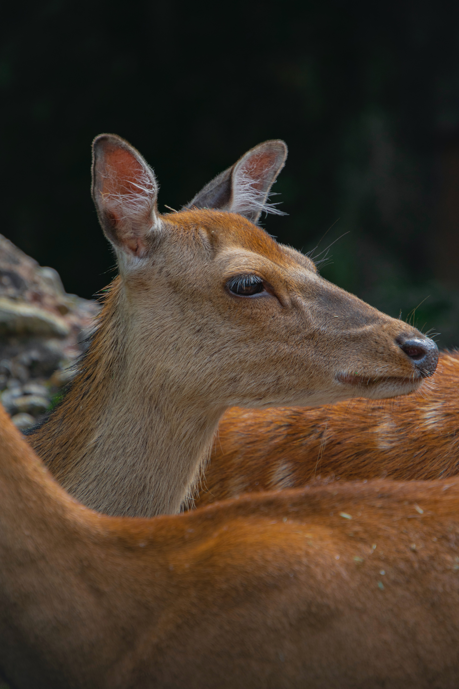

Cervo do Pantanal
da família dos cervídeosÉ considerado um animal solitário, apesar de eventualmente ser observado pequenos grupos familiares, compostos de um adulto e um ou mais jovens.

O cervo-do-pantanal é um animal majoritariamente solitário O cervo-do-pantanal possui hábitos noturnos em regiões bastante modificadas pelo homem, como observado na bacia do rio Paraná, principalmente devido à pressão de caçadores.
Seus principais predadores são a onça-parda (Puma concolor) e a onça-pintada (Panthera onca), apesar de o cervo-do-pantanal não ser a espécie mais visada por esses grandes felinos. Além destes, a sucuri (Eunectes murinus), o lobo-guará (Chrysocyon brachiurus) e jacarés podem predar principalmente os filhotes
O cervo-do-pantanal não é considerado um "pastador" e nem um "podador" típicos, tendo um hábito alimentar e de forrageio intermediário entre essas duas estratégias de obtenção de alimento.
Muitas vezes, essa espécie de cervídeo opta pela ingestão de alimentos mais fáceis de digerir, ao contrário do observado em "pastadores" típicos, e possui hábitos oportunistas se comparado aos "podadores" típicos.”
- Surgiu: 13.000 anos
- Tipo: Mamífero
- Idade Média: 10 anos
- Macho adulto: 125kg
- Fêmea adulta: 115kg
- Família: Cervidae
Pouco se sabe a cerca da reprodução do cervo-do-pantanal em liberdade. Alguns autores sugerem que o período de nascimentos se estende de outubro a novembro, mas outros afirmam que é de maio a setembro.
Também é sugerido que não existe sazonalidade nos nascimentos, e eles ocorreriam durante o ano todo. Também não se sabe quando o cervo-do-pantanal alcança a maturidade sexual.